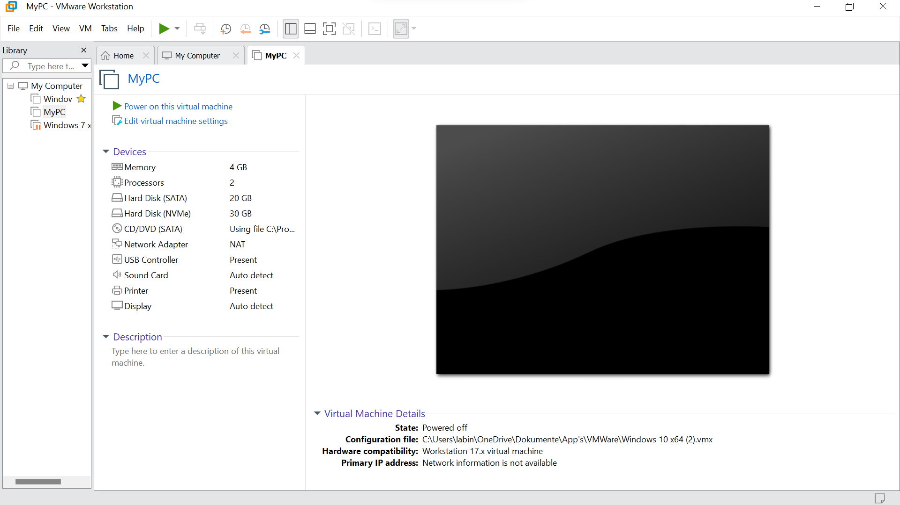

Betriebssysteme und virtuelle Maschinen.
Wie Funktioniert und was ist über
BIOS
Unter BIOS (Basic Input/Output System) versteht man normalerweise die Firmware des PCs. Die Firmware ist eine Software, die von Grund auf in die Hardware integriert ist und grundlegende Funktionen übernimmt. Die Firmware dient als Kommunikationsmittel zwischen der Hardware und der Software und ist in der Regel auf einem Flash-Speicher, einem EPROM, EEPROM oder ROM gespeichert.
VM
Eine virtuelle Maschine ist ein virtueller Computer, der als eigenes System auf einem physischen Rechner funktioniert. Auf einer virtuellen Maschine kann man vieles ausprobieren, was man auf dem Hostgerät nicht tun sollte, da etwas passieren könnte. Man kann mehrere virtuelle Maschinen auf einem Hostgerät laufen lassen.
- Bietet Optionen für Disaster Recovery und Anwendungs-Provisioning
- Einfache Verwaltung, Wartung und hohe Verfügbarkeit virtueller Maschinen
- Ausführen mehrerer Betriebssystemumgebungen auf einem einzigen physischen Computer